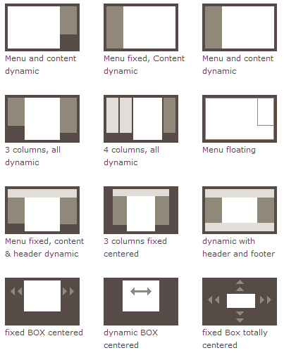
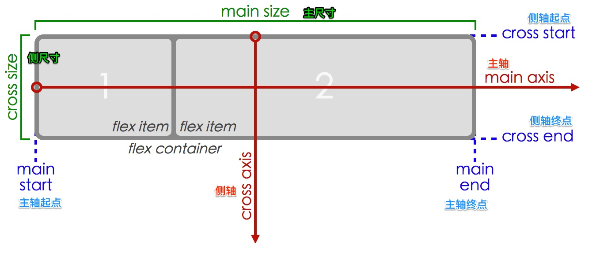

<link rel="stylesheet" href="../../css/reveal.css"/>
<link rel="stylesheet" href="../../css/theme.css"/>
<title>flex</title>

<section class=center>
  <h1>FLEX</h1>
  <h2>告别 CSS 布局</h2>
</section>

<section>
  <h1>目录</h1>

  <ol>
    <li>flex 之前</li>
    <li>flex 来了</li>
    <li>基本概念</li>
    <li>flex container 的六个属性</li>
    <li>flex item 的六个属性</li>
    <li>例子</li>
    <li>参考</li>
  </ol>

</section>

<section>
  <h2>Flex 之前</h2>
  <h3>我们用什么布局</h3>

  

  <p>主要使用</p>
  <ul>
    <li> normal flow（正常流，也叫文档流） </li>
    <li> float + clear </li>
    <li> position relative + absolute </li>
    <li> display inline-block </li>
    <li> 负 margin </li>
  </ul>
</section>

<section>
  <h2>Flex 来了</h2>
  <h3>一种新的布局方式——Flex 布局</h3>

  <ol>
    <li>块级布局侧重垂直方向、行内布局侧重水平方向，flex 布局是<strong>与方向无关</strong>的。</li>
    <li>flex 布局可以实现<strong>空间自动分配</strong>、<strong>自动对齐</strong>（flexible: 弹性、灵活）</li>
    <li>flex 适用于<strong>简单的线性布局</strong>，更复杂的布局要交给 grid 布局（还没发布）</li>
  </ol>
</section>

<section>
  <h2>基本概念</h2>
  
</section>

<section>
  <h2 style="text-align:center;">flex container 的属性</h2>
  <table>
    <tr>
      <td>flex-direction</td><td>方向</td>
      <tr><td>flex-wrap </td><td>换行</td></tr>
      <tr><td>flex-flow</td><td> 上面两个的简写</td></tr>
      <tr><td>justify-content</td><td>主轴方向对齐方式</td></tr>
      <tr><td>align-items</td><td>侧轴对齐方式</td></tr>
      <tr><td>align-content</td><td>多行/列内容对齐方式（用得较少）</td></tr>
    </tr>
  </table>
  <ol>
  </ol>
</section>

<section>
  <h2 style="text-align:center;">flex item 的属性</h2>
  <table>
    <tr><td>flex-grow</td><td>增长比例（空间过多时）</td></tr>
    <tr><td>flex-shrink</td><td>收缩比例（空间不够时）</td></tr>
    <tr><td>flex-basis</td><td>默认大小（一般不用）</td></tr>
    <tr><td>flex</td><td>上面三个的缩写</td></tr>
    <tr><td>order</td><td>顺序（代替双飞翼）</td></tr>
    <tr><td>align-self</td><td>自身的对齐方式</td></tr>
  </table>
</section>

<section>
  <h1>使用 flex 布局</h1>
  <ol>
    <li>手机页面布局（topbar + main + tabs）</li>
    <li>产品列表（ul>li*9）</li>
    <li>PC页面布局</li>
    <li>完美居中</li>
  </ol>
</section>

<section>
  <h2>参考</h2>
  <ul>
    <li><a href="http://www.ruanyifeng.com/blog/2015/07/flex-grammar.html">Flex 布局教程：语法篇</a></li>
    <li><a href="https://css-tricks.com/snippets/css/a-guide-to-flexbox/">A Complete Guide to Flexbox</a></li>
    <li><a href="https://scotch.io/tutorials/a-visual-guide-to-css3-flexbox-properties">A Visual Guide to CSS3 Flexbox Properties</a></li>
  </ul>
</section>


<script src="../../js/lib.min.js"></script>
<script src="../../js/main.js"></script>
